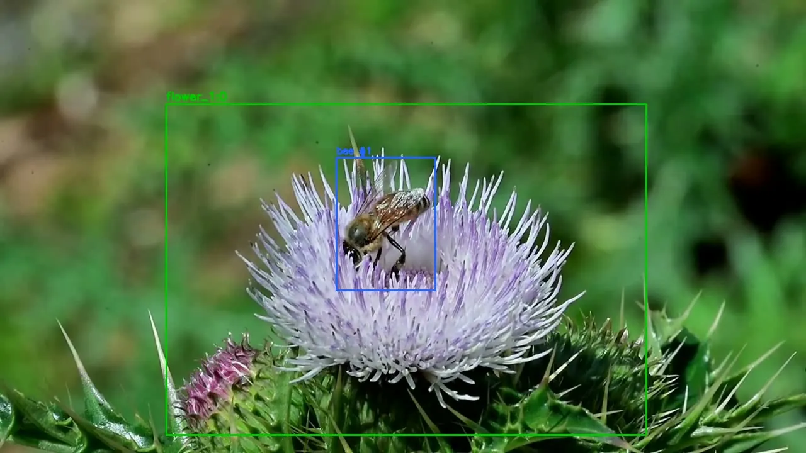

Bee-A-Hero: counting pollinator visits from orchard video
- Problem
- Growers can’t easily measure how often pollinators actually visit their flowers. Counting by eye is slow, and simple per-frame detection counts the same bee many times.
- Approach
- I built a training set of 151,545 labelled images across 2,526 insect classes, split 70/15/15 with no leakage between splits. On top of it I trained YOLO26-m detectors for flowers and five insect types and tracked each insect with BoT-SORT. A visit only counts when an insect stays on a flower for at least 2 seconds.
- My part
- Main contributor (142 of 179 commits). I built the data pipeline, the detection and tracking engine, and the FastAPI and React web app that turns an uploaded video into annotated footage and visit statistics.
| Flower detector, mAP@0.5 | 0.808 |
|---|---|
| Insect detector (5 classes), mAP@0.5 | 0.669 |
| 20 test videos: landing episodes, then real visits | 155 → 31 |
Limits: the honeybee sub-classifier reaches F1 0.52 because it had only 168 training images. The yield model is designed but not built yet.
Python, PyTorch, Ultralytics YOLO, BoT-SORT, OpenCV, FastAPI, React, Docker